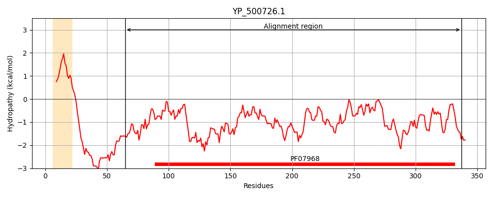
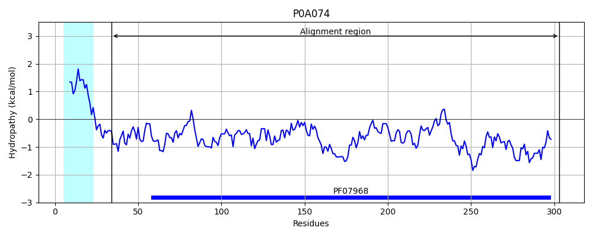
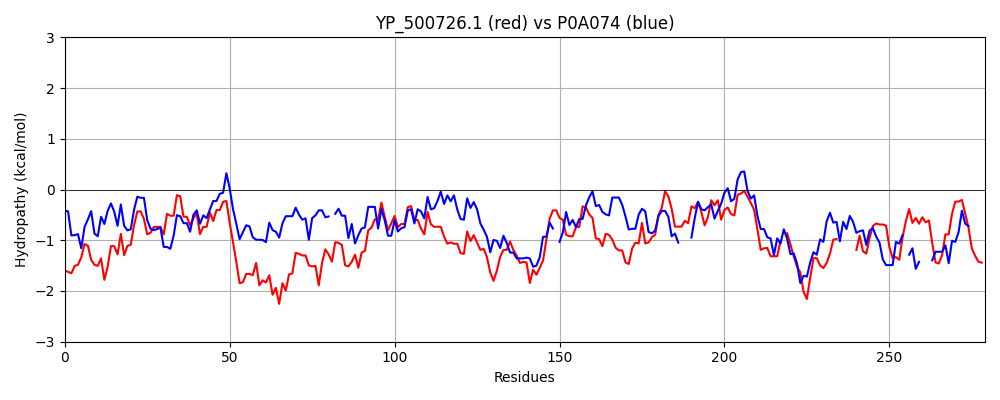

Hit Accession: P0A074
Hit TCID: 1.C.3.4.2
Hit Description: gnl|BL_ORD_ID|8530 gnl|TC-DB|P0A074|1.C.3.4.2 Gamma-hemolysin component A - Staphylococcus aureus.
Mach Len: 279
e:0.000000
Query TMS Count : 1
Hit TMS Count: 1
TMS-Overlap Score: 0.000000
Predicted Substrates:CHEBI:25367;molecule
BLAST Alignment:
Score: 408 , Bit scores: 161 bits, E-value: 3.5e-47, Alignment length: 279, Percentage identity: 35
Query: 65 DDIGKNGKITKRTETVYDEKTNILQNLQFDFIDDPTYDKNVLLVKKQGSIHSNLKFESHKEEKNSNWLKYPSEYHVDFQVKRNRKTEILDQLPKNKISTAKVDSTFSYSSGGKFDSTKGIGRTSSNSYSKTISYNQQNYDTIASGKNNNWHVHWSVIANDLKYGGEVKNRNDELLFYRNTRIATVENPELSFASKYRYPALVRSGFNPEFLTYLSNEK-SNEKTQFEVTYTRNQD-----ILKNRPGIHYAPPILEKNKDGQRLIVTYEVDWKNKTVKV 337
+DIG+ +I KRT+ + ++ I QN+QFDF+ D Y+K+ L+VK QG I S + K+ + +P +Y++ + K + ++++ LPKNKI +A V Y+ GG F S IG + S +YSKTISYNQ+NY T +N+ V W V AN + D+ LF ++ + F + P L++SGFNP F+T LS+E+ +K++FE+TY RN D + ++R + KN++ + V YEV+WK VK+
Sbjct: 34 EDIGQGAEIIKRTQDITSKRLAITQNIQFDFVKDKKYNKDALVVKMQGFISSRTTYSDLKKYPYIKRMIWPFQYNISLKTK-DSNVDLINYLPKNKIDSADVSQKLGYNIGGNFQSAPSIGGSGSFNYSKTISYNQKNYVTEVESQNSK-GVKWGVKANSFVTPNGQVSAYDQYLFAQDPTGPAARD---YFVPDNQLPPLIQSGFNPSFITTLSHERGKGDKSEFEITYGRNMDATYAYVTRHRLAVDRKHDAF-KNRN---VTVKYEVNWKTHEVKI 303 | Protein Hydropathy Plots: |
|---|
|  |  |
Pairwise Alignment-Hydropathy Plot:
|
|---|
|  |